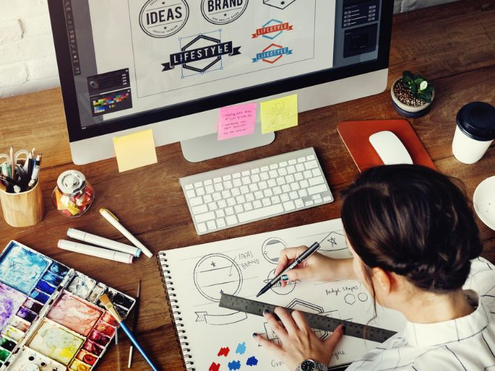
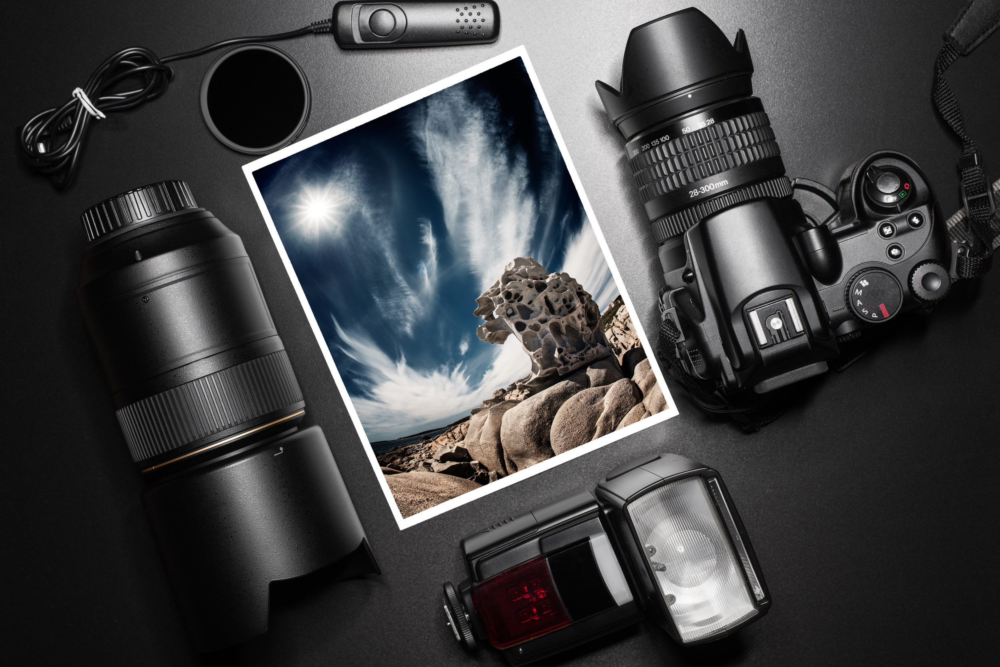

design is a profession, academic discipline and applied art whose activity consists in projecting visual communications intended to transmit specific messages to social groups, with specific objectives. Graphic design is an interdisciplinary branch of design and of the fine arts. Its practice involves creativity, innovation and lateral thinking using manual or digital tools, where it is usual to use text and graphics to communicate visually. ©

The role of the graphic designer in the communication process is that of encoder or interpreter of the message. They work on the interpretation, ordering, and presentation of visual messages. Usually, graphic design uses the aesthetics of typography and the compositional arrangement of the text, ornamentation, and imagery to convey ideas, feelings, and attitudes beyond what language alone expresses. The design work can be based on a customer's demand, a demand that ends up being established linguistically, either orally or in writing, that is, that graphic design transforms a linguistic message into a graphic manifestation. Graphic design has, as a field of application, different areas of knowledge focused on any visual communication system. For example, it can be applied in advertising strategies, or it can also be applied in the aviation world or space exploration. In this sense, in some countries graphic design is related as only associated with the production of sketches and drawings, this is incorrect, since visual communication is a small part of a huge range of types and classes where it can be applied.
Graphic design is the art and practice of planning and projecting ideas and experiences with visual and textual content. It involves arranging elements, such as images, typography, and colors, to communicate a message effectively. Graphic designers often work on various projects, including branding, advertising, web design, and publication layouts. They use software tools like Adobe Photoshop, Illustrator, and InDesign to create visually appealing designs that serve specific purposes, whether it's informing, persuading, or entertaining audiences. If you have any specific questions about graphic design, feel free to ask!
Graphic design offers numerous benefits across various fields and industries: 1. **Effective Communication**: Graphic design helps convey complex ideas and messages in a visually appealing and understandable manner. It enhances communication by using visual elements to complement or reinforce written content. 2. **Brand Identity**: Graphic design plays a crucial role in building and maintaining brand identity. Logos, color schemes, typography, and other visual elements help differentiate a brand from its competitors and create a memorable impression on customers. 3. **Increased Engagement**: Well-designed graphics capture attention and engage viewers more effectively than plain text. Whether it's a website, advertisement, or social media post, compelling visuals can attract and retain audience interest. 4. **Professionalism**: High-quality graphic design projects a sense of professionalism and credibility. Businesses with polished visual materials are often perceived as more trustworthy and reliable by customers and clients. 5. **Memorability**: People tend to remember information better when it's presented visually. Eye-catching graphics leave a lasting impression on viewers, increasing the likelihood that they will recall the message or brand later. 6. **Consistency**: Consistent graphic design across all marketing materials helps reinforce brand recognition and identity. Whether it's a business card, website, or promotional flyer, maintaining visual consistency creates a cohesive brand image. 7. **Competitive Advantage**: In competitive markets, strong graphic design can give businesses an edge by helping them stand out from competitors. A unique and compelling visual identity can attract customers and drive sales. 8. **Versatility**: Graphic design can be applied across various mediums, including print, digital, and multimedia platforms. Designers can adapt their skills to create everything from logos and brochures to websites and mobile apps. 9. **Emotional Connection**: Effective graphic design evokes emotions and elicits responses from viewers. Whether it's through color psychology, imagery, or typography, designers can create designs that resonate with the target audience on a deeper level. 10. **Problem-solving**: Graphic designers are problem solvers by nature, finding creative solutions to visual communication challenges. Their ability to think critically and creatively makes them valuable assets in many industries. These are just a few of the many benefits of graphic design. Its impact extends far beyond aesthetics, influencing how we perceive and interact with the world around us.


Back to home page